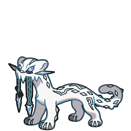
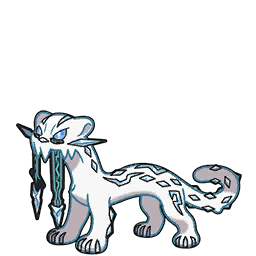
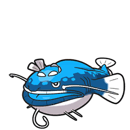
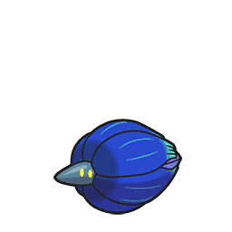
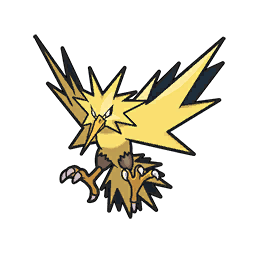

シングルS8 | ブリゴリパオジアン
どうもこんにちは、のーまです。
今回は対面的な環境の中、受けしか使えない自分にとって最適なパーティが作れたため紹介します。
初レギュDのシーズンでもあります。
過去御三家、ヒスイ組、三鳥、コピペなんかが追加されました。
今回は対面的な環境の中、受けしか使えない自分にとって最適なパーティが作れたため紹介します。
パーティ
戦績
TN:のーまだよ。 順位:9686位ルール
S8はレギュDルールで、HOME解禁ルールになります。初レギュDのシーズンでもあります。
過去御三家、ヒスイ組、三鳥、コピペなんかが追加されました。
構築経緯
上記にもある通り、対面が苦手なため受けに回る構築を考察。
個人的に受け構築で注意すべきと思った点
個人的に受け構築で注意すべきと思った点
- 高火力アタッカー(種族値の暴力)が増えたためタイプ受けが必要
- 拘り持ちが増えたため、初手にどれだけ情報を知れるかが重要
- 毒びしがきもーち減ったので毒びし対策は薄めに
基本選出
全ポケアイコン出すと逆に見にくかったので｢基本選出｣に関しては、自分のポケモンのみ。

パオジアンで様子を見て、サイクルを展開。安定択が見つからない場合はパオジアンをクッション。パオジアンが残ればスイーパーとして使う。
キラフロルが軸の構築の場合。(基本大丈夫だがヒードランがテラス前提になりそうな場合は特に)
マスカーニャがいない且つカイリュー、パオジアン、セグレイブとゴリラで受けられないポケモンが多い場合。
やどりぎで絡める場合やTODが狙える場合はこの選出が安定。

パオジアンで様子を見て、サイクルを展開。安定択が見つからない場合はパオジアンをクッション。パオジアンが残ればスイーパーとして使う。
パオジアンを他にする場合：
キラフロルが軸の構築の場合。(基本大丈夫だがヒードランがテラス前提になりそうな場合は特に)
ゴリランダーを他にする場合：
マスカーニャがいない且つカイリュー、パオジアン、セグレイブとゴリラで受けられないポケモンが多い場合。
別の選出：
やどりぎで絡める場合やTODが狙える場合はこの選出が安定。
個体紹介
サーフゴー
189(212)-x-115-176(52)-111-135(244)
最速70族抜きのHSベースです。このポケモンは調整用なので後に見るのがいいかも。
毒びしが少ないとはいえ  キラフロルがきつかった為採用。
実際に使った回数こそ少ないが カバルドンや
 ディンルーもついでに起点にできるのが強かった。
ゴリランダー
ディンルーもついでに起点にできるのが強かった。
ゴリランダー207(252)-146(4)-156(252)-x-90-105
純粋なHB。端数はSに振るのが良かったと後悔。
元々は ブリガロンを採用していたが サーフゴーに何もできない点や、
とんぼ、フィールドなどの利点を考えた結果、
ゴリランダー採用となった。交代居座りに関係なくドラムアタックや、やどりぎが安定するので使いやすかった。
瞬間回復が欲しい場合は ブリガロンになる。
ヒードラン
193(212)-x-136(76)-158(60)-160(156)-98(4)
HDベース。Bがあって助かった機会はあったけどSもうちょっとほしいかも。(ミラー用に抜き抜き抜きくらいが丁度いい)
不安定要素を少なくする為に挑発や鋼技を割いてまもみがにしたが正解だったとは思う。
対 ドランに弱かったためS振るのもだけどもう少し考察が必要。
ヘイラッシャ
257(252)-120-179(220)-x-85-60(36)
 マスカーニャに弱い点を除けば最強の物理受け。
マスカーニャに弱い点を除けば最強の物理受け。カゴのみを採用することで技範囲を広げるかつ不安定要素をなくした。
即置きが想像以上に強く、タイプ受けできないポケモンにも強く出ることができた。
スカーフボルチェン 
 にねむかごを合わせれば相手のサイクルを崩せる。
にねむかごを合わせれば相手のサイクルを崩せる。パオジアン
155-172(252)-101(4)-x-85-205(252)
初手最強のポケモン。初手出すだけで｢数的有利｣｢テラス確認｣｢裏確認｣が可能なポケモン。
先制氷技があるため、サイクルに強いボルチェン持ち
をスイープできる点も高評価。ハバタクカミ
162(252)-x-107(252)-156(4)-155-170
HB瞑想型。フェアリー兼ゴースト枠。
恐らく誰も使ってない瞑想封印。このパーティが物理受け豊富なため甘えるを使わない機会が多かった。
そのため、クレセリア や瞑想カミ を詰ませることができる封印を採用した。
基本選出を見てもらったらわかる通り選出自体少なかったが最後に置いておくと相手のカミがゴミになるので使い勝手は完ぺきだった。